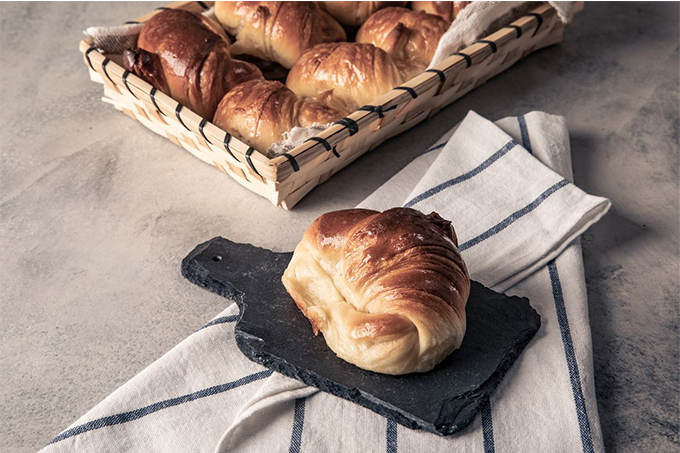

El Gourmet
Medialunas de Manteca por Juan Manuel Herrera
Ingredientes
ALMÍBAR
- Agua 300 c.c.
- Azúcar 300 Gramos
- Cáscara de limón c/n A gusto
AMASIJO
- Harina 500 Gramos
- Azúcar 50 Gramos
- Leche 250 c.c.
- Levadura 30 Gramos
- Miel 15 Gramos
- Sal 10 Gramos
- Vainilla c/n A Gusto
EMPASTE
- Mantequilla 200 Gramos
- Harina 25 Gramos
Preparación
AMASIJO
- Trabajar con gancho amasador harina, azúcar, levadura, sal, leche, miel y esencia de vainilla hasta formar una masa homogénea y elástica.
- Para el empaste trabajar e integrar mantequilla y harina.
- Estirar en forma rectangular.
- Colocar en el medio el empaste, cerrar por sus lados y dar 4 vueltas simples. Dar 1 h de frio entre vuelta y vuelta.
- Estirar la masa a ½ cm de espesor.
- Cortar fajas y de éstas triángulos. Dar frio durante 20 min.
- Enrollar de la base a la punta, dar forma de medialuna y acomodar en placa de horno.
- Dejar que leve hasta duplicar volumen.
- Pintar con doradura.
- Cocinar a 200ºc por 15 minutos aprox.
- Pintar con almíbar al salir del horno.
ALMIBAR
- En una olla verter el agua, azúcar y cascara de limón, llevar al fuego, y dejarlo hasta que se disuelvan bien los cristales de azúcar.
